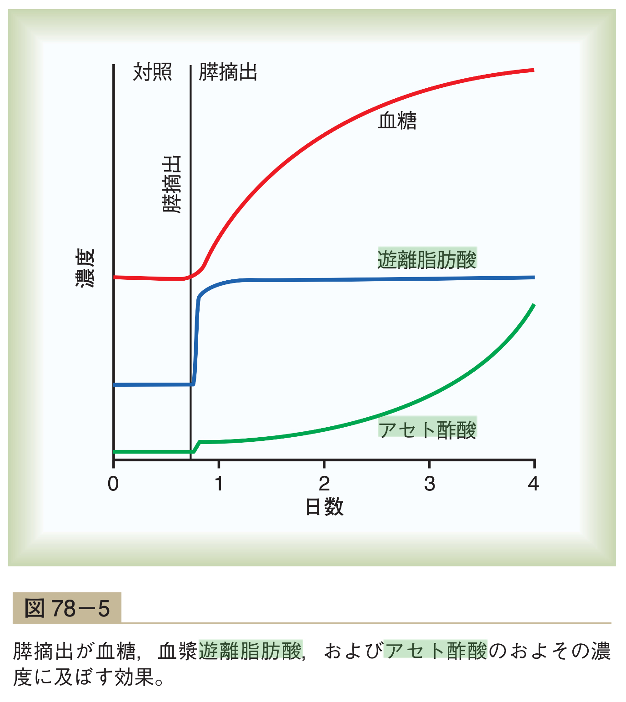
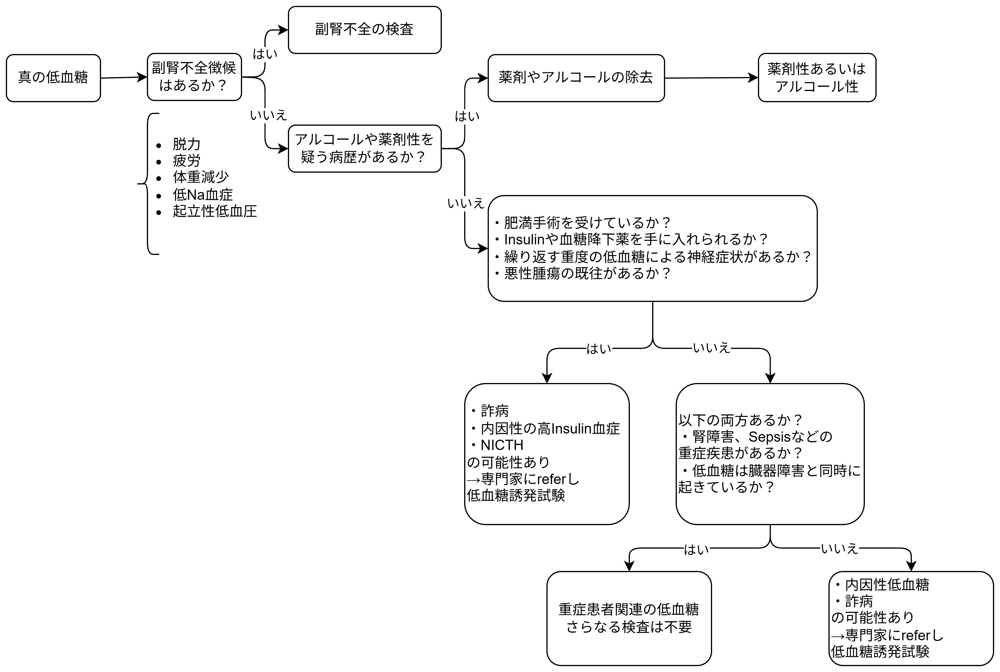
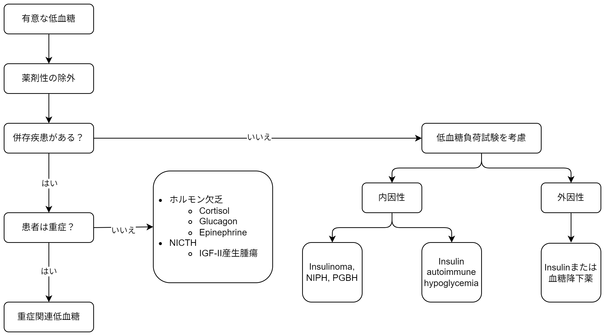
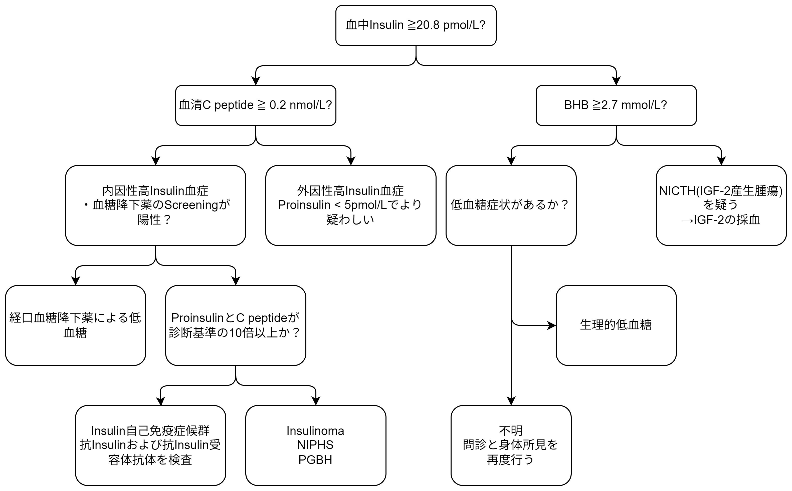

低血糖についての覚書
低血糖の機序と実践
![]()
Agenda
- 症例
- 低血糖！とくらいつく前に・・・・・・
- Hypoglycemia without DM
- 低血糖のModernな分類
- Fitting wellの場合
- 低血糖の検査の考え方～低血糖の各種の検査～
症例
- 78歳男性
- 繰り返す低血糖で入院
- 食事摂取低下後の低血糖で入院
→退院後に低血糖によるCPAで救急科入院
→総合内科転科後も低血糖を繰り返した・・・・・・
低血糖！とくらいつく前に・・・
- 本当に意味のある低血糖？
- 意味のある低血糖かどうかはWhippleの3徴を確認する
- 低血糖症状があるかを確認する
- 自律神経症状: 振戦、動悸、不安/興奮、発汗、空腹感、
- Neuroglycopenic symptoms: めまい、脱力、意識障害
- 有症状時に通常の採血で血糖値< 55mg/dLが証明されている
- 血糖値が改善したら症状も改善する
- 低血糖症状があるかを確認する
- 若年女性だと絶食期間があると無症状の低血糖になる事は多い
人体の空腹への生理的反応

- Insulinを抑制されて血糖利用が抑制される
- Glucagon分泌が増えて、糖新生が増える
- 脂質代謝が増えて、ケトン体(βヒドロキシ酪酸)が増加する
- AdrenalineおよびCortisol、GHが増加
- 自律神経症状が出る
- 更に血糖値が下がる(48-50 mg/dL)と脳が血糖低下に耐えられずにneuroglycopenic symptomを起こす(Rayas and Salehi 2000)
低血糖の具体的な症状
- 例えばInsulinomaで多い症状は以下の通り
- 77%が自律神経症状
- 96%が血糖低下による神経症状
- ≥ 80%が混乱・異常行動,
- 50%が意識消失
- 12-19%が痙攣発作
症状×血糖値はいつ有意？
- 症候性
- 65 mg/dL未満で症状があればほぼ有意
- 65-79 mg/dLの場合は通常は低血糖によるものではないが、否定は出来ない
- 80 mg/dL以上だと症状の原因にはならない
- 無症候性
- 40 mg/dL未満は有意: 繰り返す低血糖で症状が出なくなっている可能性
- 40-64 mg/dL: 患者背景で考える
低血糖の鑑別診断の
たてかた
低血糖の考え方
- 栄養不良や吸収不良による低血糖は稀
- 血糖を上げるホルモンと下げるホルモンの疾患で考えると良い
- 血糖を上げるホルモン(原因としては少ない)
- 甲状腺ホルモン
- Glucagon
- Adrenaline
- GHなど
- 血糖を下げるホルモン(原因として多い)
- Insulin
- Insulin likeなホルモン(IGF-2など)
- 血糖を上げるホルモン(原因としては少ない)
ただし・・・・・・
- 下記理由から、この考え方よりはより実践的な考え方がある
低血糖のModernな分類
- 昔は、空腹時と食後で分類していた
- この区別は現在では有用性が低いことが知られている
- 例えば、空腹時血糖の主原因とされるInsulinomaでは27%が食後低血糖を呈する(Martens and Tits 2014)
- 患者が自覚できない事もちゃんと病歴を述べられないことも多い
- この区別は現在では有用性が低いことが知られている
- 現在では以下のように分ける
- 内服中または内科疾患が明らかにある患者(Ill or medicated)
- 健康(そうに見える)患者(Seemingly well)
低血糖の鑑別 ~ Ill or medicated individual
- 薬剤性
- Insulin or insulin分泌促進薬
- アルコール
- 重症患者(Critical illnesses)
- 肝/腎/心不全
- 敗血症 (malariaを含む)
- 内分泌疾患(ホルモン分泌不全)
- 副腎不全(Cortisol分泌不全)
- グルカゴン・ノルアドレナリン分泌不全1
- Nonislet cell tumor
Ill or medicatedについて
- 重症患者の場合はしばしば低血糖になる
- 食事量低下+(肝臓/腎臓での)糖新生の低下+Insulinのclearanceの低下
- Sepsis, 肝/腎不全
- この場合、色々な検査はあまり有用性は低く原病の治療のみ行う
- ただし、副腎不全の検査の閾値は低くする
- Nonislet cell tumorについては、事前に分かっている可能性が高い
Nonislet cell tumorについて
- 膵臓以外の腫瘍による低血糖
- 機序として複数あり
- IGF-IIを産生する事によりInsulinomaのような病態になる
- 悪性腫瘍自身が血糖を消費する など
- 巨大な肝臓癌が大きく、70%以上が10cmより大きい
- 検査結果として、free IGF-IIが上昇し、IGF-I, Insulinが低下する事が
知られている(Martens and Tits 2014)
低血糖の鑑別 ~ Seemingly well
- 内因性の高インシュリン血症
- Insulinoma
- 機能性Β細胞疾患(Functional beta cell disorders; nesidioblastosis)
- Noninsulinoma pancreatogenous hypoglycemia (NIPHS)
- Post-gastric bypass hypoglycemia
- インシュリンへの自己免疫関連(Insulin autoimmune hypoglycemia)
- 抗Insulin抗体 or 抗Insulin受容体抗体
- Insulin分泌促進薬
- 偶発的、あるいは故意による低血糖
Seemingly well individual
- 簡単に言うと「きれいな原因の疾患」が隠れている
- インシュリン関連の検査をしつつ、
- 頑張って低血糖時の採血をとりに行く！
Insulinomaについて
- 膵臓のβ細胞の良性腫瘍(10%未満が悪性)
- 通常は空腹時だが、食後にも低血糖は起こり得る(前述)
- やや女性に多く、1/250,000人年の発症率
- 10%未満がMEN-1と関連する(Martens and Tits 2014)
NIPHSについて
- 膵島細胞の過形成(nesidioblastosis)および、Lngerhans細胞への
分化による稀な疾患- 腫瘍のないInsulinomaみたいな感じ
- 食後2-4時間で低血糖が起こることが特徴で、精神神経症状が起こる(Adrian Vella, n.d.-b)
- 男性に多い
PGBHについて
- Roux-en-Y gastric bypass (RYGB) surgeryの後の低血糖
- 以前は晩期Dumping症候群と言われていた
- Etiologyははっきり分かっていないが、複数のHormon異常が
原因とされている(James C Ellsmere, n.d.)
Insulin autoimmune hypoglycemiaについて
- 抗Insulin抗体(Insulin autoimmune syndrome)あるいは、
Insulin受容体への抗体(type B insulin reistance)で起こる低血糖(Rayas and Salehi 2000) - 抗Insulin抗体は自己抗体が外れた時に低血糖になる
- 食後すぐの高血糖と数時間経過した後の低血糖が特徴
- 日本人だと、MMI内服後に起こりやすい(非Asianだと、血液疾患や
自己免疫疾患背景が多い)
- 抗Insulin受容体抗体はInsulin受容体へのpartial agonistによって起こる
- 低力価だと低血糖、高力価だと高血糖となる
- 背景にSLEなどが多い
- 代償として血中C-peptide, Insulin濃度が異常高値となる
低血糖患者への共通の診察
Hypoglycemiaの問診
- 日常生活
- 栄養状態、普段の食事内容、アルコール摂取量
- 詳細な病歴
- いつ・どんな症状が出る？誘発因子は？
- 患者背景
- 既往歴や併存症(肝腎不全など)の確認
- 薬は？
- OTC、漢方薬も含めて確認する(Rayas and Salehi 2000)
薬について
| Evidenceレベル | 薬剤名 |
|---|---|
| Moderate quality | Cibenzoline, Gatifloxacin, Pentamidine, Quinine, Indomethacin, Glucagon during endoscopy |
| Low qualtiy | Chloroquineoxaline sulfonamide, Artemisin, IGF-1, Lithium, Propoxypherene/Dextropropoxyphene |
- Quinolones, Pentamidine, Quinine, BB, ACEi, IGF-1が有名
- Very low quality of evidenceは割愛
低血糖患者への個別の診察
UptoDateのアルゴリズム

- 副腎不全を否定する
- 問診を重視 →理論的というよりは、実践的
Dynamedのアルゴリズム

- 薬剤性を病歴から否定はUptoDateと一緒
- 検査結果がPureじゃないconcurrent illnessを除外
→どちらかというと理論派
勇気を持って、低血糖誘発試験
- Insulin/IGFによる低血糖疑い or 原因がわからない時に誘発試験の適応
- 空腹時血糖 = 絶食試験、食後低血糖 = Mixed-meal test
- 低血糖の時に採血を行う
- 血糖値
- Insulin値
- 血清C-peptide
- 血清βヒドロキシ酪酸(aka ケトン体)
- プロインシュリン値
- (血糖降下薬のスクリーニング)
低血糖の検査の考え方〜各種の検査の意味～
- 血中Insulin = 内因性+外因性のInsulin
- 内因性のInsulinの量をみる検査
- ProInsulin
- 血清C-peptide
- Insulinが分泌していないのに血糖が低いときの検査
= 脂肪酸代謝になっている- 血清ケトン体
負荷試験
- 施設ごとでばらつきあり
- 食事前に採血をする
- 固形の食事(普段の食事内容)を摂取
- 施設によって、ここから30分毎に採血
- 低血糖症状あるいは5時間確認したら採血
- 15gの炭水化物をとらせて血糖値の推移と症状の回復を確認
- BS <65 mg/dLかつ症状がある時の検査を有意とする
- AM 8時に絶食開始
- カロリー/カフェインフリーの飲み物のみ摂取可
- 2hr毎に血糖測定
- 70mg/dL未満になったら、30min毎に症状確認と血糖測定
- 72時間経過あるいは<55mg/dLまたは無症候でもBS< 45 mg/dLを達成したら修了
- BS< 55 mg/dLの時の採血を行う
- Glucagon 1mg ivし10, 20, 30min後の血糖測定
- Glucagon iv後にGluが25 mg/dL以上改善したらInsulin性低血糖を示唆する
検査結果の解釈
| 疾患名 | Insulin (microU/mL) | C-peptide (nmol/L) | Proinsulin (pmol/L) | βヒドロキシ酪酸 (mmol/L) | insulin自己抗体 |
|---|---|---|---|---|---|
| 外因性insulin | >>3 | <0.2 | <5 | ≤2.7 | 陰性 (時に陽性) |
| Insulinoma, NIPHS1, PGBH2 | ≥3 | ≥0.2 | ≥5 | ≤2.7 | 陰性 |
| 血糖降下薬 | ≥3 | ≥0.2 | ≥5 | ≤2.7 | 陰性 |
| Insulin自己抗体 | >>3 | >>0.2 | >>5 | ≤2.7 | 陽性 |
| IGFによる | <3 | <0.2 | <5 | ≤2.7 | 陰性 |
| Not insulin (or IGF)-mediated | <3 | <0.2 | <5 | >2.7 | 陰性 |
- NIPHS: noninsulinoma pancreatogenous hypoglycemia syndrome
- PGBH: post-gastric bypass hypoglycemia
検査結果の読み方

Point
- Insulin ≧3 μU/mLはInsulinによる低血糖を示唆する
- C-peptide, ProInsulinはInsulinが内因性か外因性かを判断する
- Insulinによる低血糖の時に、C-peptide <0.2nmol/L(0.6 ng/mL)は外因性のInsulin
- ProInsulin <5 pmol/Lは外因性のInsulinを示唆する
- ProInsulin, C-peptideが高いと悪性腫瘍を示唆し、Proinsulinが高値なほど未分化
- βヒドロキシ酪酸はInsulinまたはIGFによる低血糖では抑制される
= 陽性の場合はInsulinやIGFによる低血糖は否定的で、Cortisol欠乏、
慢性の低栄養、肝腎不全、薬剤性など - 低血糖時の検査の閾値での結果はInsulinomaに対して
感度>90%, 特異度>70%
Take home message
- 低血糖を見た時には、Whippleの三徴で真の低血糖かを確認する
- 低血糖はseeming wellかmedicated or illで鑑別する
- 低血糖の原因はInsulin関連かInsulin以外かで考えると分かりやすい
Reference
Adrian Vella. n.d.-a. Hypoglycemia in Adults Without Diabetes Mellitus: Determining the Etiology. Https://www.uptodate.com.
Adrian Vella. n.d.-b. Noninsulinoma Pancreatogenous Hypoglycemia Syndrome. Https://www.uptodate.com.
DynaMed. n.d. Hypoglycemia in Adults - Approach to the Patient Without Diabetes. Https://www.dynamed.com/approach-to/hypoglycemia-in-adults-approach-to-the-patient-without-diabetes; DynaMed.
James C Ellsmere. n.d. Bariatric Operations: Late Complications with Subacute Presentations. Https://www.uptodate.com.
Martens, Pieter, and Jos Tits. 2014. “Approach to the Patient with Spontaneous Hypoglycemia.” European Journal of Internal Medicine 25 (5): 415–21. https://doi.org/10.1016/j.ejim.2014.02.011.
Rayas, Maria S, and Marzieh Salehi. 2000. “Non-Diabetic Hypoglycemia.” In Endotext. MDText.com, Inc.
Footnotes
Insulin分泌不全の糖尿病患者において、下垂体疾患などによる甲状腺機能低下やGH低下で低血糖に
なりやすい↩︎